Colors
How can I change the color of the bars in my bar plot?
If using the same color for all bars, define the fill
argument in geom_bar() (or geom_col()). If
assigning color based on another variable, map the variable to the
fill aesthetic, and if needed, use one of the
scale_fill_*() functions to set colors.
See example
You can set all bars to be a given color with the fill
argument of geom_bar().

Alternatively, if the colors should be based on a variable, this
should be should happen in the aes() mapping.

And if you want to then customize the colors, one option is
scale_fill_manual(), which allows you to manually assign
colors to each bar. See other scale_fill_*() functions for
more options for color choices.
ggplot(mpg, aes(x = drv, fill = drv)) +
geom_bar() +
scale_fill_manual(values = c("purple", "orange", "darkblue"))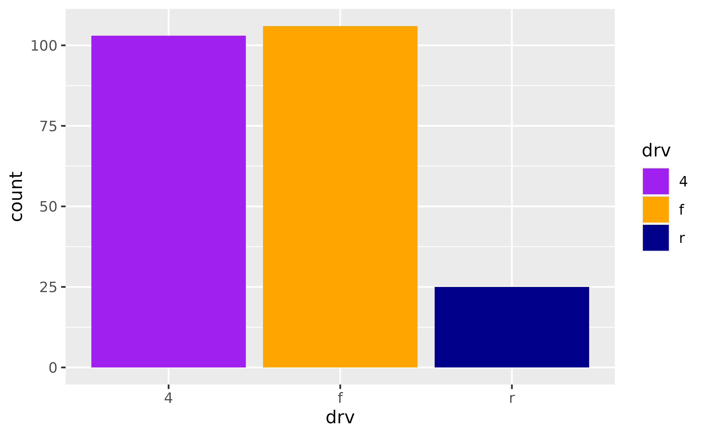
Spacing and widths
How can I increase the space between the bars in my bar plot?
Set the width of geom_bar() to a small
value to obtain narrower bars with more space between them.
How can I remove the space between the bars and the x-axis?
Adjust the expand argument in
scale_y_continuous(), e.g. add
scale_y_continuous(expand = expansion(mult = c(0, 0.05)))
to remove the expansion on the lower end of the y-axis but keep the
expansion on the upper end of the y-axis at 0.05 (the default expansion
for continuous scales).
See example
By default ggplot2 expands the axes so the geoms aren’t flush against the edges of the plot.

To remove the spacing between the bars and the x-axis, but keep the spacing between the bars and the top of the plot, use the following.

To achieve the opposite, switch the values in mult. Note
that the tallest bar is now flush against top of the plot.

To adjust spacing around the x-axis, adjust the expand
argument in scale_x_discrete(). Note that this places the
bars flush against the left side and leaves some space on the right
side.
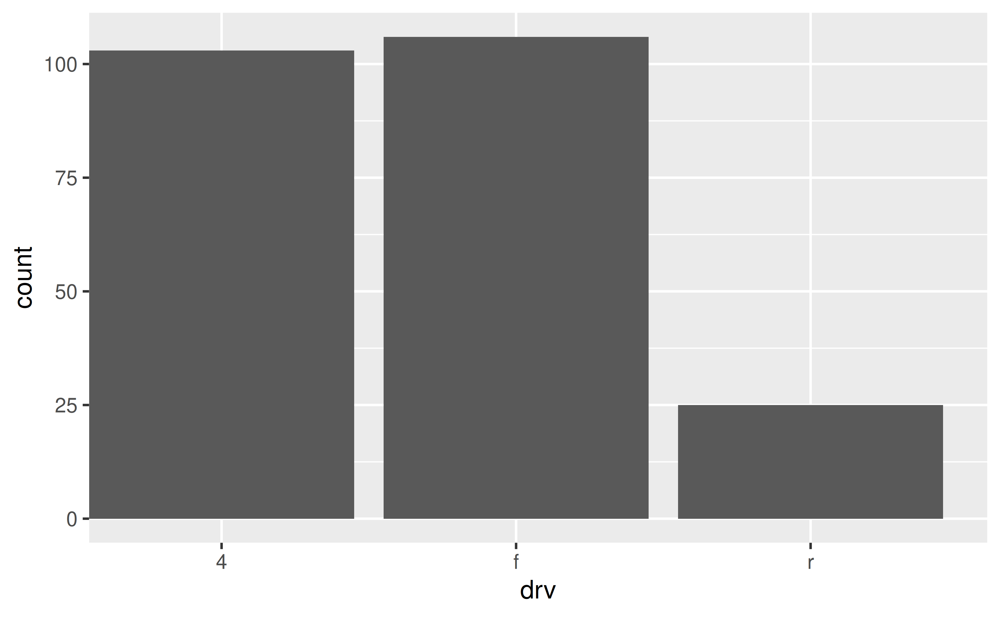
The default look of a bar plot can be achieved with the following.
ggplot(mpg, aes(x = drv)) +
geom_bar() +
scale_x_discrete(expand = expansion(add = 0.6)) +
scale_y_continuous(expand = expansion(mult = 0.05))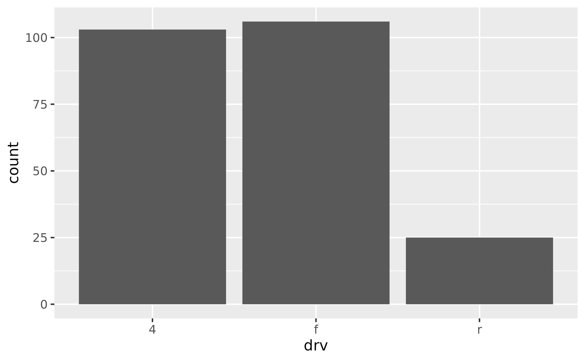
How do I ensure that bars on a dodged bar plot have the same width?
Set position = position_dodge2(preserve = "single") in
geom_bar().
See example
In the following plot the bars have differing widths within each
level of drv as there are differing levels of
class represented.

You can use position_dodge2() with
preserve = "single" to address this.
ggplot(mpg, aes(x = drv, fill = class)) +
geom_bar(position = position_dodge2(preserve = "single"))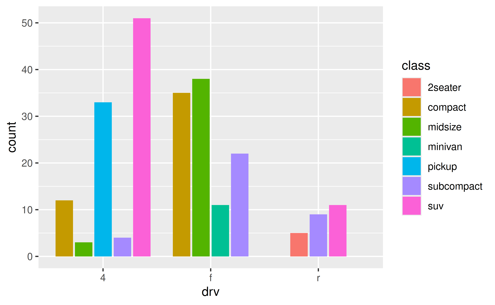
Stacked bar plots
How can I create a stacked bar plot displaying a conditional distribution where each stack is scaled to sum to 100%?
Use position = "fill" in geom_bar() or
geom_col(). If you also want to show percentages on the
axis, use scales::label_percent().
See example
The following plot is useful for comparing counts but not as useful for comparing proportions, which is what you need if you want to be able to make statements like “in this sample, it’s more likely to have a two-seater car that has rear-wheel drive than an SUV that has rear-wheel drive”.
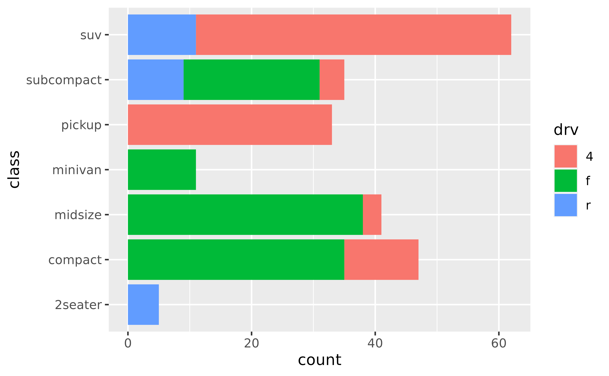
position = "fill" will generate a bar plot with bars of
equal length and the stacks in each bar will show the proportion of
drv for that particular class.
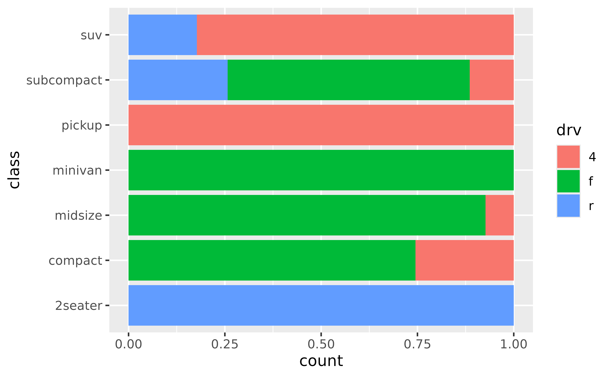
If you want to show percentages instead of proportions on the x-axis,
you can define this in scale_x_continuous() with
scales::label_percent().
ggplot(mpg, aes(y = class, fill = drv)) +
geom_bar(position = "fill") +
scale_x_continuous(name = "percentage", labels = scales::label_percent(accuracy = 1))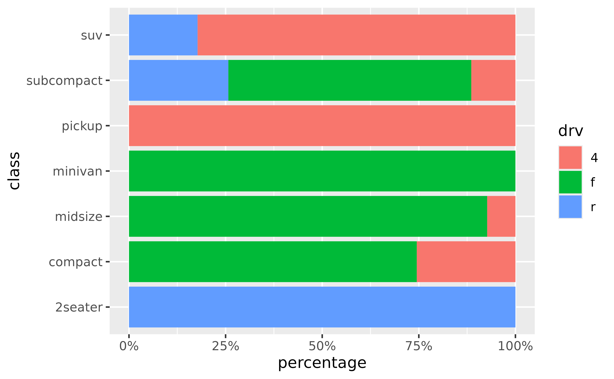
How can I create a stacked bar plot based on data from a contingency table of to categorical variables?
First reshape the data (e.g. with tidyr::pivot_longer())
so that there is one row per each combination of the levels of the
categorical variables, then use geom_col() to draw the
bars.
See example
Suppose you have the following data from an opinion poll, where the numbers in the cells represent the number of responses for each party/opinion combination.
poll <- tribble(
~party, ~agree, ~disagree, ~no_opinion,
"Democrat", 20, 30, 20,
"Republican", 15, 20, 10,
"Independent", 10, 5, 0
)You can first pivot the data longer to obtain a data frame with one
row per party/opinion combination and a new column, n, for
the number of responses that fall into that category.
poll_longer <- poll %>%
pivot_longer(
cols = -party,
names_to = "opinion",
values_to = "n"
)
poll_longer
#> # A tibble: 9 × 3
#> party opinion n
#> <chr> <chr> <dbl>
#> 1 Democrat agree 20
#> 2 Democrat disagree 30
#> 3 Democrat no_opinion 20
#> 4 Republican agree 15
#> 5 Republican disagree 20
#> 6 Republican no_opinion 10
#> 7 Independent agree 10
#> 8 Independent disagree 5
#> 9 Independent no_opinion 0Then, you can pass this result to ggplot() and create a
bar for each party on the y (or
x, if you prefer vertical bars) axis and fill the bars in
with number of responses for each opinion.
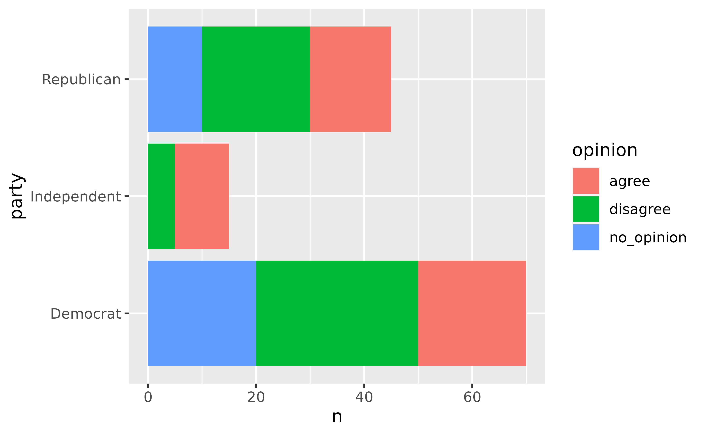
To plot proportions (relative frequencies) instead of counts, use
position = "fill" in geom_col().
ggplot(poll_longer, aes(y = party, fill = opinion, x = n)) +
geom_col(position = "fill") +
xlab("proportion")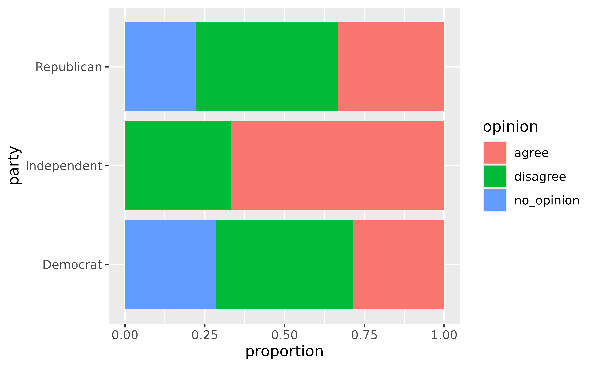
How can I make a grouped bar plot?
Map the variable you want to group by to the x or
y aesthetic, map the variable you want to
color the vars by to the fill aesthetic, and set
position = "dodge" in geom_bar().
See example
Suppose you have data from a survey with three questions, where respondents select “Agree” or “Disagree” for each question.
survey <- tibble::tribble(
~respondent, ~q1, ~q2, ~q3,
1, "Agree", "Agree", "Disagree",
2, "Disagree", "Agree", "Disagree",
3, "Agree", "Agree", "Disagree",
4, "Disagree", "Disagree", "Agree"
)You’ll first want to reshape these data so that each row represents a
respondent / question pair. You can do this with
tidyr::pivot_longer(). Then, pass the resulting longer data
frame to ggplot() group responses for each question
together.
survey %>%
tidyr::pivot_longer(
cols = -respondent,
names_to = "question",
values_to = "response"
) %>%
ggplot(aes(x = question, fill = response)) +
geom_bar(position = "dodge")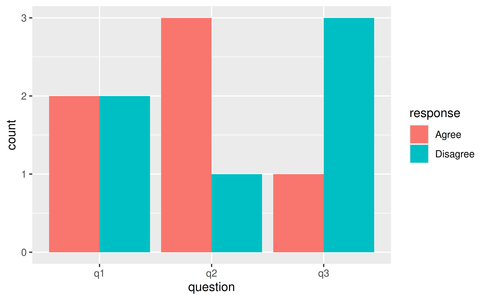
How can I make a bar plot of group means?
Either calculate the group means first and use
geom_col() to draw the bars or let ggplot2 calculate the
means with stat_summary() with fun = "mean"
and geom = "bar".
See example
One option for calculating group means is using
dplyr::group_by() followed by
dplyr::summarise(). Then, you can pass the resulting data
frame to ggplot() and plot bars using
geom_col().
mpg %>%
group_by(drv) %>%
summarise(mean_hwy = mean(hwy)) %>%
ggplot(aes(x = drv, y = mean_hwy)) +
geom_col()Alternatively, you can use stat_summary() to let ggplot2
calculate and plot the means.
ggplot(mpg, aes(x = drv, y = hwy)) +
stat_summary(fun = "mean", geom = "bar")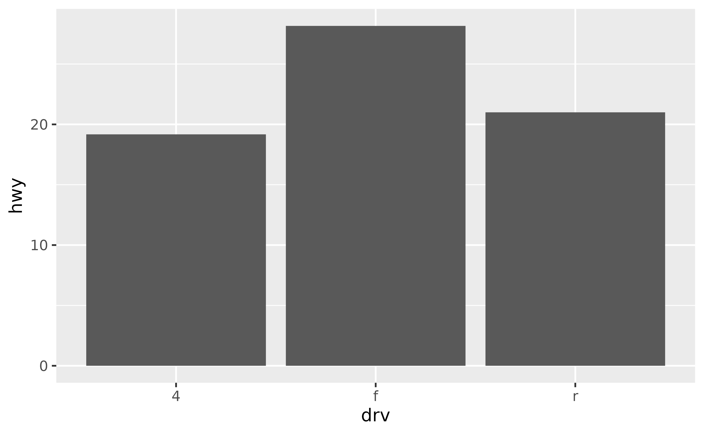
Axes and axis limits
Why do the bars on my plot disappear when I specify an axis range
with ylim()? How can I get the bars to show up within a
given axis range?
ylim() is a shortcut for supplying the
limits argument to individual scales. When either of these
is set, any values outside the limits specified are replaced with
NA. Since the bars naturally start at y = 0,
replacing part of the bars with NAs results in the bars
entirely disappearing from the plot. For changing axis limits without
dropping data observations, set limits in coord_cartesian()
instead. Also note that this will result in a deceiving bar plot, which
should be avoided in general.
See example
In the following plot the y-axis is limited to 20 to 120, and hence the bars are not showing up.
ggplot(mpg, aes(x = drv)) +
geom_bar() +
ylim(c(20, 120))
#> Warning: Removed 3 rows containing missing values or values outside the scale
#> range (`geom_bar()`).
In order to obtain a bar plot with limited y-axis, you need to
instead set the limits in coord_cartesian().
ggplot(mpg, aes(x = drv)) +
geom_bar() +
coord_cartesian(ylim = c(20,110))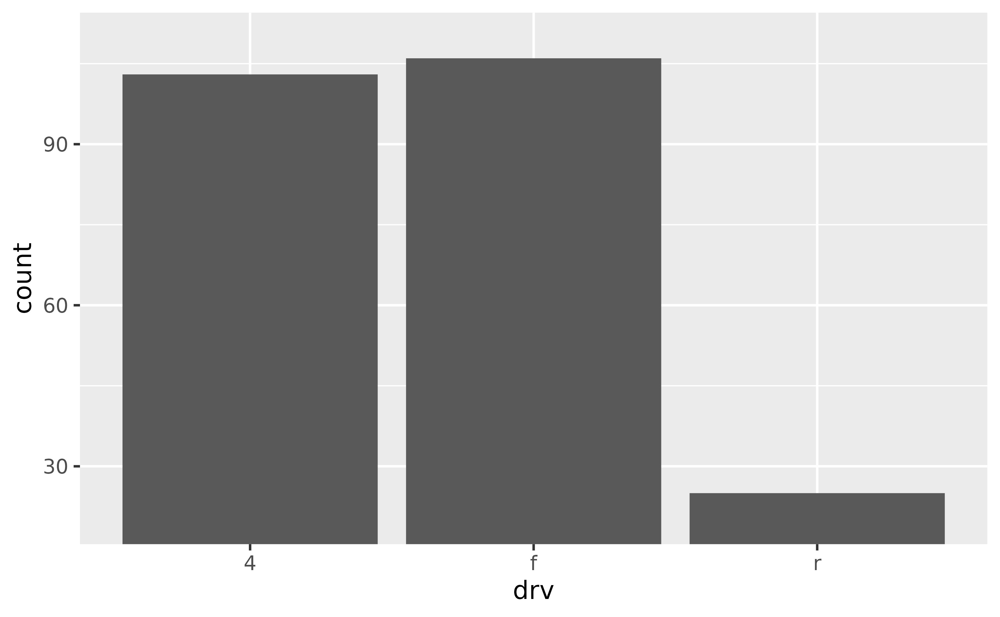
This is, indeed, a deceiving plot. If you’re using a bar plot to display values that could not take the value of 0, you might choose a different geom instead. For example, if you have the following data and plot.
df <- tibble::tribble(
~x, ~y,
"A", 1050,
"B", 1100,
"C", 1150
)
ggplot(df, aes(x = x, y = y)) +
geom_col()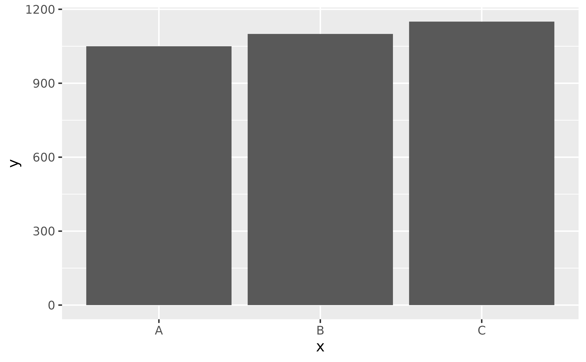
Also suppose that you want to cut off the bars at
y = 1000 since you know that the variable you’re plotting
cannot take a value less than 1000, you might use
geom_point() instead.
# don't do this
ggplot(df, aes(x = x, y = y)) +
geom_col() +
coord_cartesian(ylim = c(1000, 1150))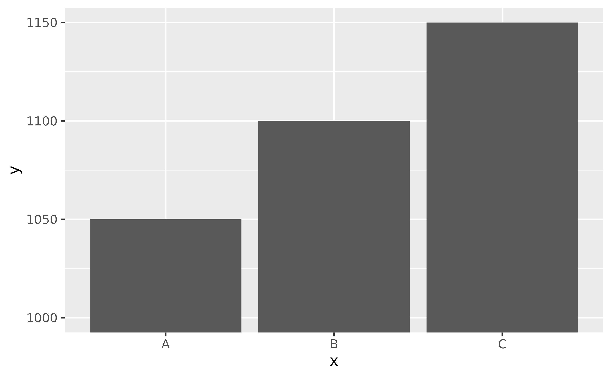
# do this
ggplot(df, aes(x = x, y = y)) +
geom_point(size = 3)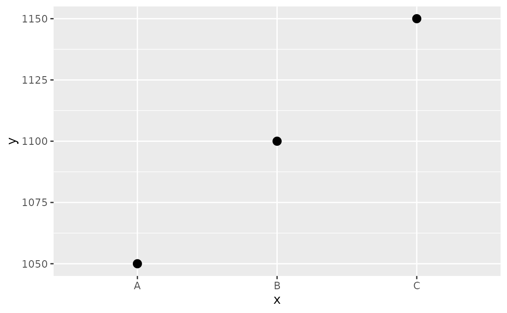